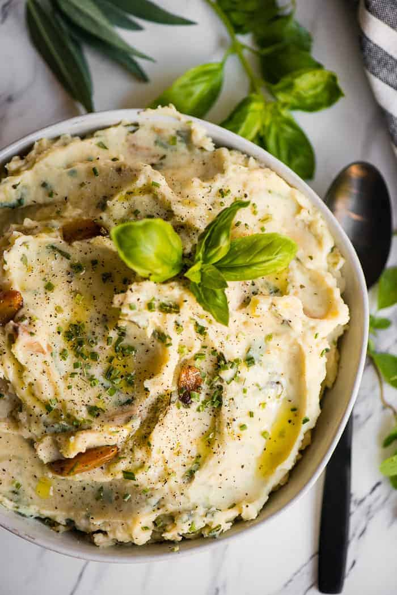

Home
Garlic Herb Mashed Potatoes

Creamy, buttery mashed potatoes infused with roasted garlic and fresh herbs—comfort food perfected.
This side dish blends simple ingredients into something luxurious. Boiled potatoes are mashed with velvety butter and warm milk, then elevated with roasted garlic and a sprinkle of freshly chopped herbs like thyme and parsley. The result is smooth, savory, and irresistibly aromatic—an ideal companion to bold mains or a star on its own.
Ingredients
- 1 kg (2.2 lbs) potatoes, peeled and chopped
- 1 whole garlic bulb
- ¼ cup butter
- ½ cup warm milk (or cream for extra richness)
- 1 tablespoon fresh thyme, chopped
- 1 tablespoon fresh parsley, chopped
- Salt and black pepper, to taste
- Olive oil, for roasting garlic
Steps
- Preheat oven to 200°C (400°F). Slice the top off a garlic bulb, drizzle with olive oil, wrap in foil, and roast for 30 minutes until soft and golden.
- Boil the peeled potatoes in salted water until fork-tender, about 15–20 minutes. Drain well.
- Squeeze roasted garlic cloves out of the skin into the pot with the potatoes. Add butter and mash until mostly smooth.
- Gradually stir in warm milk until desired consistency is reached.
- Season with salt, pepper, and fold in fresh thyme and parsley.
- Serve warm with a drizzle of olive oil or extra butter on top.